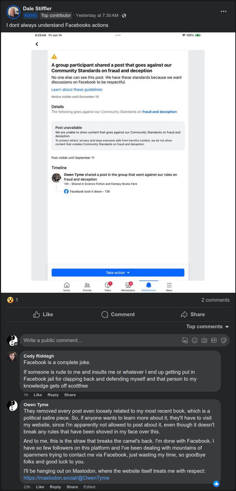

Tymely News
Work in Progress #1: Troll War #1 (June 21-28)
Eight days ago, I started work on one of my many planned novels, Troll War
For a while now, I've been thinking it might be fun to write a little something about each day's writing, as a sort of journal of my work in progress.
I'll be doing this on Mastodon for daily posts and on this blog for more in-depth information every weekend.
To start the ball rolling, I've been posting my daily updates on Mastodon all week: https://mastodon.social/@OwenTyme/112672253855096568
These are each short, normally detailing one chapter, because that's roughly my minimum average output. From time to time I may post twice in a day, if I've done things that need to be broken up.
The rest of this post will be my first weekly update.
Basics of the Setting
Troll War takes place in a galaxy not unlike our own, on a world similar to Earth, though with the addition of magic. It won't play too big a part in the novel, but there's a whole galaxy of sci-fi wonders out there, including an AI species that's consuming the resources of the galaxy to spread like a plague, but that won't become a big part of the story until book 2, AI War.
The series is titled Rumors of War.
This as yet unnamed world (the inhabitants probably call their planet some uncreative translation of the word 'dirt', just like we do) includes a variety of fantasy races. So far, I've only mentioned humans, elves, dwarves, trolls, gnomes, goblins and dark fairies (but this implies the inclusion of light fairies). The other races will likely play a part in book 3, Magic War.
As for technological level, I'm intentionally breaking with tradition and not using a medieval setting, placing the people of the various races collectively somewhat beyond the Victorian-era of technology, with a fantastic flare, but only when considered as a homogeneous people, which they most certainly are not.
Dwarves
The dwarves have advanced steam technology and metallurgy, including vehicles and trains of all kind, but have stuck by their old melee weapons, shields and armor, because the best firearms they've managed on their own are muskets, though they don't know the secret to making black powder or gunpowder, getting that from humans. Their axes do include one-shot muskets, however, in place of the ax handle.
Dwarves don't use magic directly, but their best craftsmen are somewhat mysteriously able to craft magic items and their magic is always of the best quality. They do this by starting with magical materials they've dug from the ground, such as mythril.
Humans
The humans are most advanced in firearms and the family of Lady Gunn (see below) are the principle inventors of guns. In particular, repeating pistols and rifles will play a part in battle later in the book, once things really get going.
Elves
Elves mostly eschew technology in favor of magic, but they have nothing against purchasing technological items from other races, if they find them useful. This may change over time or it may not. I'm undecided, but the local elves in the book are very much linked to the humans, since they're governed by the same king.
Trolls
Trolls are surprisingly advanced in medicine, because they have the advantage of being able to experiment with bodies that rapidly regenerate and the real truth is that their doctors (if you could call them that!) are able to produce frightening abominations of biology that would terrify even modern men, shaping the bodies of trolls until they become something new and horrifying.
It isn't uncommon for a troll to reattach severed limbs and with the assistance of another, they can reattach a severed head.
It isn't obvious to an outsider, but troll women look just like human women, aside from being exceptionally attractive, with starkly-white hair.
Troll women are all effectively witches, with a style of music-based magic unique to them. They prefer, but are not limited to mental magic, with a heavy emphasis on telepathy. Illusions come almost as easy to them.
Trolls strongly believe that might makes right. They're secretly ruled by their women, because their magic makes them believe they're superior to men and the men have never been strong enough to resist.
Notable Kingdoms
Oswil is the human/elf kingdom, to the north of the main trade road. The southern end of the kingdom is human land and the north end is elf land, though they all live under the rule of a human king.
To the southwest of Oswil is Utros, the troll kingdom, which is outwardly ruled by King Shengis, though he's actually a puppet of the troll Queen, Nepita. Utros is mostly in the mountains and the land is rich with iron.
To the southeast of Oswil is Fortune Fields, the dwarf kingdom, which is mostly a large, open plain, though there are swamps and mountains on the western edge. The land is rich with copper, iron, silver and gold.
The three kingdoms form the primary setting of Troll War.
Prologue
The majority of the prologue was written as a result of some inspiration about five months ago and on Friday of last week (the 21st), I did some clean-up work and then finished it.
This initial scene takes place in a tavern on the southern outskirts of the human kingdom of Oswil, which hosts bare knuckle matches with very few rules.
On this particular day, a human noblewoman, Lady Gunn, has been invited to join another noble, an elf wizard named Lord Rolar. Lady Gunn isn't pleased by how dirty the tavern is, but she's pleased by the fine wine her companion offers her and a match between a dwarf and a troll begins.
Dwarves are well-known for how sturdy they are, on top of being incredibly stubborn. Their fighting spirit is second to none and getting a dwarf to back down is next to impossible. This particular dwarf is used to slowly wearing his opponents down by having far greater endurance, on top of being able to punch like a fully-loaded mine cart.
Trolls, on the other hand, have the wondrous power to regenerate from most any wound, a power they use to out-last most any opponent they might face in battle. This particular troll is used to taking hits and growing back, outlasting his opponents though masochism and an incredible tolerance for pain.
Lady Gunn is soon drawn into the fight, selecting the dwarf as her choice of champion to cheer for.
The one-on-one fight rages for six hours, until the dwarf is exhausted, but still standing and the troll is on his feet, but he's begun to exhaust his body's resources useful for regeneration, starting to lose his edge though hunger.
The tiny thought I had in the back of my mind for this is that each time a troll heals, they become slightly more hungry. While they're able to recycle damaged cells and restore their bodies, there's a lasting cost in the form of a metabolic price that must be paid to activate the magic used for this.
Both combatants are at the end of their rope, breathing heavily and the troll isn't regenerating anymore, because he's too hungry. They nod to each other with mutual respect.
The dwarf asks, "Shall we end this by putting everything we've got into one last exchange?"
The troll agrees and they both abandon defense, charging each other for one, final strike! The troll dies as a result and the dwarf is briefly praised as the winner, but just as he starts a speech about his victory, he falls dead, min-sentence.
Seeing the results, Lord Rolar asks, "To the south of Oswil, we have two nations, Fortune Fields and Utros, ruled by dwarves and trolls, respectively. After this evening's spectacle, can you imagine what might happen if circumstances conspired to send them to war?"
Lady Gunn proposes they settle the question with their usual bet at stake: thirty silver pieces.
Chapter 1: Don't Kill the Messenger!
Nepita, Queen of the Trolls sits upon her throne in the great hall of Utros, surrounded by the women of her court, feeling bored.
He thoughts are interrupted by a nervous boy entering the room, carrying a message from the troll king, Shengis, claiming an elf has been captured entering the kingdom.
Nepita invited the boy to come closer and realizes she's looking at her own son, who she handed off to her mate to raise, once he was weaned. She feels a strangely sudden sense of attachment to the fourteen year old boy and grants him the title of 'Prince', similar to the way she granted her mate the title of 'King'. She orders her right-hand woman, Anji, the Weapon Master, to take the boy away for training, then orders her sister, Illa, to test the boy for magic potential, which flies in the face of tradition.
Nepita silences the resulting argument with a thunderous shout and then orders the room cleared. She may have a sentimental side, but Nepita is also unpredictable and beyond deadly. She respected by the entire court due to the way she broke every bone in her grandmother's body, to gain the throne. She's also well-known for revisiting any offense ten-fold, which is her standing international policy.
Raising her voice in song, Nepita touches the mind of her mate, Shengis, that she might use him like a puppet.
Through his eyes, she observes the elf prisoner, who explains his presence by offering up a journal taken from an ill-fated party of dwarves that had been on a spying mission inside troll lands.
It is hinted, but not spelled out that this elf is Lord Rolar, last seenin the prologue.
Nepita speed-reads the journal and is both furious with the dwarves and eager for war, because it will interrupt her boredom.
Disconnecting her mind from Shengis, she calls Anji back into the room, giving orders for the coming conflict.
Chapter 2: Disturbing the Peace
King Gorgo Windmaker, the Tenth, King of the kingdom of Fortune Fields, receives a guest.
Lady Gunn hands over a journal she claims was captured from trolls, which details their spying operation and observations of the dwarf kingdom.
King Windmaker values his profitable business relationship and even friendship with the trolls, despite their obvious differences, but he can't ignore the journal, so he sends his son, Prince Kadrek, as an envoy to Utros, to seek a peaceful conclusion to the conflict.
The price has an eerie journey up the canyon leading to the palace of Utros, until he hears singing that absolutely entrances him, drawing him every forward, until he lays eyes on four troll women. He stares at them in a trace as his men are slaughtered, but just as he's about to be killed, their leader, Anji, recognizes him, having sen the Prince though her mate's eyes.
She orders the prince stripped, shaved and his memory of troll women wiped, then sends him on ahead, for interrogation. The Prince is put to sleep by a magic lullaby.
Chapter 3: Declaration of War
When Kadrek wakes, he faces Shengis and Nepita looks on him through her mate's eyes.
He explains his presence and begs for peace, but neither of the troll rulers believes him, thinking his father sent him under false pretenses.
They hear him out, then give him an ultimatum to deliver, before giving him the night to rest, because eh it's a long, naked, barefoot run back to the palace of Fortune Fields, which he should make sure he hurries to complete, because he has limited time to warn his father before two more villages are destroyed (he's informed of the plan to destroy Flintbrook; see next paragraph).
While the prince sleeps, Anji and her army arrive at the smallest dwarf village along the border to Utros, Flintbrook. They slaughter every dwarf they find, not even sparing the children, and arrange the bodies to spell out a horrifying message: THE PRICE IS TEN-FOLD! They leave no stone of the village standing on another, using bursts of magic to level every structure they find.
At dawn, the prince is released and he runs the entire way, leaving his feet a bleeding mess. He collapses in the throne room and tells his father he must immediately respond with his acceptance of the destruction of Flintbrook or be prepared to lose Withermine and Razorpoint Refuge, followed by all-out war.
Last of all, he warns his father the soldiers should plug their ears and not listen to the singing, before he passes out.
Chapter 4: War Machine
Furious, King Windmaker shouts, "By Nobris, ye don't shave a dwarf's beard!"
Here's a helpful quote from what I've written, to explain:
Nobris was the god of dwarves, industry and beards, who was widely believed to have gifted the dwarf race with their talent for mining and crafting. According to legend, he’d also given them their beards, which grew thicker and longer than the hair of women. To a dwarf, their very beard was a sacred, god-given gift and shaving it off was said to be an affront to Nobris, whom they praised more than any other god. In short, the trolls hadn’t just shamed the prince, but they’d also insulted Nobris.
Kadrek is carried off by the healers, while the King erupts in orders to prepare his kingdom for war. In particular, he orders his war-riders gathered at the west gate, then makes his way to the back of a statue set behind his throne, climbing a ladder to the platform, which allows access to the interior of the statue, which is filled with buttons, levers and other controls. He opens the shutters covering the windshield of the definitely-not-a-statue, allowing more light in, then shuts the back hatch.
He activates the steam engine in the belly of his war-rider, which is actually a huge, steam-powered mech shaped like a giant dwarf armed with an ax and shield. Likewise, the war-riders occupied by his royal guardsmen come to life and they march down the hall, though a huge pair of brass-shod doors.
They emerge on the main street of the royal city and every dwarf witnesses the huge machines in motion, coming to the same conclusion: the kingdom is at war. The workers on their way home from work turn around to volunteer for another shift, while the busy streets are soon cleared, as every man, woman and child among the dwarves sets out to contribute to the war effort, as one lone street vendor, who used to be a royal guardsman sheds a tear for the looming future and the loss of peace, likely with the only joy being the joy of fighting.
Chapter 5: Bloody Razor
I didn't get very far on this chapter, doing little more than writing descriptions as King Windmaker's war-riders gather, then set out, one two companies off to Withermine, while he takes another two off to Razorpoint Refuge.
Razonpoint Refuge is a fort built at the deepest portion of a crescent-shaped mountain named Razorpoint Ridge. The interior of Razorpoint Ridge faces into Fortune Fields and is topped with razor-sharp obsidian, while the prevailing wind blows right into it. The top is high enough that it touches and shaves the bottom off of clouds, causing the land beneath to often fill with fog, incidentally watering the crops for the dwarves living there.
Not only is it fruitful land, but also extremely defensible, so the King's father built a fort there, using the excuse of defending the nearby trade road, to the north, to justify putting a fort so close to troll lands.
King Windmaker splits his force in two, placing them near each tip of the crescent, that they might use a pincer attack when the trolls inevitably come.
Depite the fact backup is on the way, the King worries: Razorpoint Refuge is an impenetrable fortress, impossible to take by force, and yet, the trolls openly declared it as one of their first targets in the war, as if it were a place of weakness. He can't help but wonder what they know that he doesn't.
The answer will become clear on Monday, when I resume writing, but I'm leaning toward it being a matter of troll women and their magic. On the other hand, the trolls have no idea the dwarven war-riders even exist, so it should be a really fun opening battle for the war, with unexpected outcomes on both sides. However, unless I change the chapter title, the battle is going to be bloody.
Tags: writing, work-in-progress, rumors-of-war
More Short Stories
After spending an inordinate amount of time fiddling with the details, including small adjustments to CSS files to allow for the posting of properly-formatted prose on my website, I've posted a pair of my old short stories from the days when I put my work up on Wattpad.
The first of these is Community Service Fairy Godmother and the second is Sweet Surrender, which will become the next two entries in my Short of Tyme series. You can find links to their pages there or click on the titles, below.
Neither has cover art at the moment, because I don't wish to re-use their old AI-generated cover art. They'll get another pass of editing sometime before they get new covers illustrated by Ryan Johnson, the artist I work with. As soon as both tasks are done, they'll be published in the usual fashion.
I should soon be posting more stories, because I have more to share, but for now, I hope you'll enjoy these little gems.
Community Service Fairy Godmother
Seeing systemic injustice in the laws established by the Queen of the Fairies, may she reign forever, Sophorica breaks them to draw attention to their absurdity, literally painting New York City red. After all, if the only crime is to be caught and any offense can be forgiven simply by being sneaky, then the law itself can only be considered a cruel joke.
Her crime is expunged from history and the human race is none the wiser, but the Queen, may she reign forever, sentences Sophorica to perform one act of community service in the human realm for each human witness. This service takes the form of granting wishes to human children as their fairy godmother, until they're happy.
However, the awful truth is that granting wishes rarely brings happiness, forcing Sophorica to learn as much as she can about her charges, that she might get them to wish for what they really need, rather than what they want.
Will Sophorica find a way to free herself from the twisted, unjust punishment wrought by the Queen, may she reign forever, successfully demonstrating the flaws in fairy law or will she be forever banished to the human world as a Fairy Godmother?
Sweet Surrender
In this trio of linked tales, learn what happens when the unstoppable force meets the immovable object.
In the first tale, a priestess to the god of empathy never wanted to involve herself in politics, but when her king seeks riches from the kingdom at the expense of the common man, she's forced to put herself directly in the path of the King's armies, who are under strict orders to turn her away, even if it means killing her. Unfortunately for them, they didn't count on the pain they inflict on her reflecting back!
In the second tale, nobles discuss Aaron Kozinski, an amazing guard that never fails in his duty, no matter how bleak the situation, all in exchange for a little money, that he might eat and pay rent. He stands guard in horrendous weather and even repels assassins, preventing them from coming anywhere near his employer, all without complaint.
In the concluding tale, the two are manipulated into conflict by a mysterious man that hopes they'll destroy each other.
Will the priestess learn enough about Aaron to ease his pain or will she be overwhelmed by his hopelessly broken heart?
Tags: short-story, writing, publishing
Shame On Me, I Guess, Part III
Despite my earlier posts regarding how much I dislike the social-media-platform-that-shall-remain-nameless, I got used to using it as an additional platform on which to toot my horn and gain some fans.
I had hoped to reach a larger audience, but now regret my choice to use that website for more than just an experiment.
What Happened?
I released Demon for President!, which is a political satire piece, in which a demon runs for President of the United States.
I posted about it a few times via a science-fiction and fantasy group that I'd taken a liking to, which requires manual approval for all posts before they're shown publicly. The group admin had no issue with what I was doing and approved. He often hit like on my posts in the past, as well. Not that one, but political satire isn't everyone's cup of tea, so fair enough.
Then yesterday, the social-media-platform-that-shall-remain-nameless pulled every last one of my posts to the group over a supposed rule violation for "fraud and deceptive practices". The group admin was absolutely mystified by this, because he knew as well as I that I wasn't deceiving anyone. Any human being that read my posts would have come to the same conclusion.
The software (probably AI) that the social-media-platform-that-shall-remain-nameless uses to moderate literally cannot tell the difference between language related to selling a political satire book and an attempt to get people to vote for a non-existent demon that's running for president.
The absurdity of this is actually quite astonishing to me.
Based on the message that was shoved in my face over this unjust enforcement of their rules, they literally claim the rules for their website are not just enforced by software, but that no human being was even involved in checking the software's work. I have no option to appeal and no opportunity to seek for this to be made right.
In short, they must have fired their human moderators and replaced them with software as a result of their worship of the almighty dollar and desire to cut costs all the way to the bone.
Yes, companies exist to make a profit, but long-term profits have never been found by tying up the end-user, so they can't resist (monopolistic practices), dropping drawers and squatting down on the end user's face (disrespecting the user), followed by defecating into their screaming, open mouth (expecting them to take whatever is dished out, no matter how vile).
That is a disgusting state of affairs, which can only lead to further injustice and it's simply bad business. Period.
It's also a matter of squashing people's right to voice themselves. Yeah, I know, the first amendment doesn't apply, because they own the website, not the government, but squashing people's rights has never been a good business decision in the long run, because the users will leave like rats bailing from a sinking ship, sooner or later.
What Now?
I will never use the social-media-platform-that-shall-remain-nameless again, not even for an experiment. My page there will remain up for another month or two, just to give the people I'm leaving behind a chance to see what happened and point the way to greener pastures.
I doubt they'll follow, but I'll at least have the satisfaction of knowing I've done the right thing by trying to raise the warning flag.
Alternatives?
Mastodon is a wonderful social media platform that I can't praise enough, which mimics the interface of the social-media-platform-formerly-known-as-twitter. I've been welcomed by the people that use it, the platform itself treats me with respect and the rules for the server I use are really quite short and straight to the point. I've been using it about the same amount of time as the social-media-platform-that-shall-remain-nameless, but I've had far more success there.
Here's my Mastodon profile, in case you're interested.
I've also recently discovered Lemmy, which is a decentralized forum system that operates similar to Mastodon, based on the same underlying technology (ActivityPub). I'll probably be using this in the future, but I've also been considering using Reddit, because it has a larger user-base.
Pulling Back the Curtain...
The social-media-platform-that-shall-remain-nameless is Facebook, by the way. It's been said before and I'm sure it will be said many times more, but the company isn't worth trusting. Their business practices are atrocious and the only reason they haven't failed is because they're so huge, with so many users, no one can stand the idea of leaving their family and friends behind, even though they'd like to stop using that website.
My suggestion: it's time to walk away. Sometimes, you just have to cross the bridge and then burn it down before the vicious wolves nipping at your heels can reach you.
I should have stuck to my original opinion and never bothered with Facebook, but that's where the people are and I was just trying to promote my novels.
From now on, I'll remember this lesson and hopefully this article series won't get a fourth entry, because that really would be embarrassing for me. "Shame on me", indeed.
What I'll be Doing
Facebook effectively tried to censor one of my books, so would anyone be interested in reading "The Novel Facebook Tried to Silence!" Somehow, I suspect that's a line that will sell books...
Evidence and What I Left Behind
I wish I had screenshots of the posts Facebook removed, but I've got nothing left of most of them due to Facebook wiping them out.
Facebook wiped out at least three promotional group posts (once again, I remind you that these required admin approval to be shown) related to Demon for President!. First was a short post with just the cover and a description of the book, mostly word for word copied from the back cover text, along with the book's cover
Second, I used my ad flyer, which shows off the Republican and Democrat personas of the villain of the book, along with I believe more or less the same text as the previous post. I may have added a little blurb to describe the series, but I'm not sure.
Last of all was a post offering free Ebooks in exchange for honest reviews. It was only tangentially related to Demon for President!, in that it displayed the cover of it.
There was no act of fraud and no intent to deceive anyone in any of this, despite Facebook's unjust claims of such. I was just trying to promote my most recently published novel and get some much-needed reviews, as any self-published author would.
Post #1: Reconstructed Book Announcement
This is as close as I can get to the original text of the post I made announcing the publishing of Demon for President!. I can't guarantee the text is 100% as it was, but this should be quite close, because most of it was a copy+paste from the same sources and it was just a re-arranged and expanded version of one of my Mastodon posts:
Book #3 of Ashen Blades, Demon for President! is now available for pre-order, coming to online bookstores June 10, 2024: https://owentyme.us/books/ashen-blades/demon-for-president.html
When a snake demon in an expensive, tailored suit takes an irreverent stab at American Presidential politics, the Hunter is literally forced to take a stab at him, to save the USA from getting a Demon for President!
The Hunter’s demonic arch-nemesis, Vogerath, returns to Earth once more, but this time, he’s running for President of the United States, on the 2024 ballot! Worse yet, the demon’s unique power to be in multiple places at once allows him to convincingly pretend to be identical twins, running as both a Republican and Democrat!
The other candidates all drop out of the race under mysterious circumstances and with his best competition being himself, he’s practically assured a win!
Soon, the American people are lapping up the snake-in-a-suit’s every word as if it were ambrosia, calling out his name at every turn, magically charmed to believe he’s the best thing since sliced bread, despite the checkered, criminal history of his “family.”
Hard pressed to get rid of him, the half-demon Hunter and her allies kill him repeatedly, but he pops back up like a bad weed, making all of his appointments on time, photogenically kissing babies, cutting the ribbons of stores and donating laundered blood-money to charitable causes.
Will the hunter manage to end the demon’s presidential campaign before election day? If she doesn’t, the USA may just get a Demon for President! Buy this book today and find out for yourself!

Post #2: The Flyer
Days later, I finally came up with a proper flyer for the book, along with some ad text I was happy with. I can't recall the text for this one, but I think it was nearly identical to the previous post, because I was rather tired at the time and in a lazy mood. I think it was posted on June 8th, but it might have been the 9th. I'm not sure.

Post #3: The Review Request
I'm lucky I saved the text of the last of my censored posts, because I intended to use it elsewhere (and yes, that giveaway code is still good):
FREE Ebooks! Use the code 'P6YFQ' via this link to get free Ebooks of my novels: https://www.smashwords.com/profile/view/OwenTyme
If you use this code, then please write an honest review as soon as you've read each book. The truth is I really do need the reviews, just to prime the pump a bit. After all, almost no one will take a chance on a book with no reviews.
Please post reviews to the sites you usually buy from, because most online book sellers, including Amazon and Barnes and Noble, will allow you to post a review without making a purchase.
All of my currently published novels are available to you, including Troll Song, Forgotten Legends, The Third Wish, She Hunts Demons, She Goes to War and Demon for President! My always free short stories are also available, including Emergent Consequences and She Goes to Summer Camp. So, yes, my entire catalog of works are free to you through June 30th, after which the code expires.
Here are some examples of sites on which you can write reviews (each link should point to a list of my published works):
https://www.amazon.com/s?i=digital-text&rh=p_27%3AOwen+Tyme&s=relevancerank&text=Owen+Tyme
https://www.goodreads.com/author/show/45452178.Owen_Tyme
https://www.barnesandnoble.com/s/%22Owen%20Tyme%22
https://fable.co/author/owen-tyme

What the Admin Posted
You can find the post from the admin of the group here: https://www.facebook.com/groups/scififan/permalink/8044035455647552/
And because I want as much of the evidence out of Facebook's hands as possible, here's a screenshot of the message, including the screenshot he posted and was confused over, along with my comment:

Note the other comment: another witness of the awful over-reaching of the rules, along with willful ignorance of other infractions.
To summarize: no one asked for this unjust enforcement of rules, no one is happy about it and even the admin of the group is mystified about why it happened!
What the Admin Asked Me
The admin also reached out to me. Here's a screenshot of our brief conversation on the matter:

At the time he reached out, I was only aware my review request post had been taken down (I suspected it was because of the use of "we" in the image), but after answering him I dug a little deeper, finding three or possibly four of my posts were gone, all related to the political satire piece, so I think that was the real cause.
Post #4: The Goodbye Post From My Facebook Page
Finally, here's a quote from my last post on Facebook, for the sake of preservation, in case it gets censored just like my group posts about my novel:
I'm done with this social media platform. I don't like the way they enforce their rules (all done with software, with no human to review what the software does, plus no one can appeal to a human over unjust rule enforcement by that software).
They've unjustly applied their rules to me on multiple occasions, sometimes due to over-zealous software that can't grasp the subtleties of human communication and other times because of a literal bug in their software that got me slapped with rule violations for an ad I didn't even run, the form for which was auto-populated by their own software.
Yes, I'm serious: the software filled the form and then punished me for the content of it, before I could even change it. I'm tired of how broken this website is. Period. So, I won't be posting here anymore. I'll leave the page up for now, to get the word out, but when I'm ready (probably in a month or two), it will come down.
If you still want to follow my work on a social media platform, try my Mastodon profile, which is where I'm most active: https://mastodon.social/@OwenTyme
Alternatively, you can bookmark my website and visit from time to time, because I update it often: https://owentyme.us My website includes a blog you can subscribe to with an RSS reader: https://owentyme.us/blog/
Finally, if you just want to chat with me, my E-mail address has always been public: owentyme@owentyme.us
Good luck to all of you that are staying behind. I'm sure the rule-enforcement bots are coming for you next, since we apparently live in a dystopian future ruled by robots.
Final Thoughts
Sorry this post is far longer than my typical blog entry, but I wanted to both express my feelings and set aside some evidence of Facebook's shameful behavior for the sake of warning others.
I hope you learned something of value from my experience, because perhaps that would make it all worth it.
Tags: social-media, social-media-platform-that-shall-remain-nameless
New Release: Demon for President!
I'm delighted to announce the release of a new book! The third volume of Ashen Blades, Demon for President! is now available as an Ebook!

The Hunter's demonic arch-nemesis, Vogerath, returns to Earth once more, but this time, he's running for President of the United States, on the 2024 ballot! Worse yet, the demon’s unique power to be in multiple places at once allows him to convincingly pretend to be identical twins, running as both a Republican and Democrat!The other candidates all drop out of the race under mysterious circumstances and with his best competition being himself, he's practically assured a win!
Soon, the American people are lapping up the snake-in-a-suit’s every word as if it were ambrosia, calling out his name at every turn, magically charmed to believe he’s the best thing since sliced bread, despite the checkered, criminal history of his “family.”
Hard pressed to get rid of him, the half-demon Hunter and her allies kill him repeatedly, but he pops back up like a bad weed, making all of his appointments on time, photogenically kissing babies, cutting the ribbons of stores and donating laundered blood-money to charitable causes.
Will the hunter manage to end the demon's presidential campaign before election day? If she doesn’t, the USA may just get a Demon for President! Buy this book today and find out for yourself!
There's also a promotional page for this book, which includes links to political pins you can buy.
Tags: ashen-blades, novel, publishing
Stickers of the Hunter

Ryan Johnson, the artist that does my book covers, sometimes also does little tie-in products that can be picked up from his store page, like the prototype sticker imaged here, which he kindly sent to me so I could see how they'd turn out.
The currently sold version omits the text and just shows the Hunter/Little Miss Secret/LMS.
Personally, I hope to see other artistic tie-ins to my work in the future. I even get a little money from each sale, since they're based on my writing.
Tags: ashen-blades
The Third Wish, in Ebook and Print!

Plagued by horrific nightmares, the consequences of war and reeling from the loss of his family, the Steel Wizard, Levi Jacobs copes by throwing himself into work, but old enemies gain the power to travel through time, refusing to give him a moment to grieve. Making matters worse, an impatient and violent alien pirate lurks in orbit.Far from friendly, the alien pirate is boiling with rage over several massive blows to his pride at the hands of humanoids. Unable to kill those responsible, instead he plots revenge on their child, Levi, and everyone around him, to regain face in the eyes of his own kind, for whom personal pride is literally everything, including social ranking and the right to rule.
While Levi's busy dealing with the pirate, a deposed prince scours history for allies, putting together a frightening misfit team of spies, dangerous trolls and wizards that all have a grudge to settle with Levi and his family. Intent on changing history to suit themselves, they strike at the foundations of the present, threatening to kill Levi's father at a pivotal moment on which the history of the galaxy hangs.
Will Levi solve this mess and move forward with his life or will he buckle under the responsibility of protecting both what he has and what he's lost?
I'm very pleased to announce that book three of The Wizard's Scion, The Third Wish is now available for 3.99 in Ebook or 18.99 in paperback (US dollars).
I hope you'll enjoy it as much as I did!

Tags: ashen-blades, novel, publishing
New Stores For My Books!
There's recently been some interesting developments for me in regards to where fans can find my novels and short stories online.
Bookshop.org
I recently learned my print books are for sale on bookshop.org at the prices I set, which is a rare thing to see (most online stores carrying my books mark them up to insane prices). After asking on Mastodon about it, I learned its a reputable online store, so I've added it to my multi-store book links.
I quite like the site, because not only is it extremely highly rated, but it also helps support small book stores by sharing the profits of online sales with them.
Due to how much people seem to love the site, I've moved it to the head of the list of reputable stores where you can buy my books.
Bookshop.org is now my favored online store for purchasing print copies of my books.
Fable.co
Draft2Digital (the platform I publish through) recently added a new online Ebook store for distribution that looks absolutely amazing to me, because it's a combination of an Ebook store and an online book club host.
Fable.co is a site I'm seriously thinking of giving a whirl, because it looks like I could setup a book club centered around my own novels.
Sadly, Fable doesn't yet show up in my multi-store links, but I'm hoping Draft2Digital will update their system to allow this, soon.
Still, it's another interesting online destination and a very promising-looking site.
In Conclusion
I would now suggest you pick-up print copies of my books from bookshop.org, because some of the money filters down to local book stores.
Despite the wonderful addition of Fable to the mix, my favorite store for Ebooks is still Smashwords, because the Ebooks they sell can be used on any device of your choosing and I happen to get fatter profits from sales there (the parent company of Smashwards is Draft2Digital, so there's only the one middleman).
Tags: publishing
She Goes to War, Now in Print!
The second volume of the Ashen Blades series, titled She Goes to War, is available in print! In addition, She Goes to Summer Camp, the short story included in She Goes to War, is available both as a free Ebook and in print.
If you want to own both, buy the novel. If you want to get a free taste of the Ashen Blades series, claim your free copy of She Goes to Summer Camp today!
She Goes to War

The Hunter never wanted to go to war, but in 1972, she senses the return of her demonic arch-nemesis, Vogerath, to the world. Following his magic like a bloodhound, she finds herself inexplicably drawn to Vietnam, a war zone.With a pressing need to kill Vogerath, who claims to be the serpent from the Garden of Eden, the half-demon Hunter is joined by her detective partner, Clayton Simmons, and a powerful witch, Verda Bagley.
It was meant to be a simple search and destroy mission, but nothing in the jungles of Vietnam is ever simple and their plans go off the rails the moment the Hunter sets foot on the ground. She’s overcome by the magic of the jungle, which causes her to forget her humanity and transform into a great, black cat with blue eyes!
Her team are forced to subdue her, to bring her back to her senses, but the consequences of her instinct-driven actions leave them troubled, because she killed a demon disguised as an American soldier and his best friend wants revenge! As this fresh, unwanted conflict comes to a close, the Hunter’s hands are reluctantly stained with human blood.
Vogerath’s jungle hideout is surrounded by soldiers and the raid begins, but the Hunter’s plan continues to go wrong. After a unit of tanks is overrun, the US military throws everything they’ve got at the demons, inadvertently playing into Vogerath’s hands! The demon grows stronger with each attack and awaits the power of a nuclear strike, planning to use it to open a portal to Hell, so endless legions of demons can march forth to conquer the Earth!
Will the Hunter and her friends stop Vogerath in time or will the world be conquered by demons? Buy this book today and find out!
Includes a bonus novella: She Goes to Summer Camp, in which the Hunter faces the most unthinkable and horrifying of challenges: teenagers.
She Goes to Summer Camp

Camp Sapphire Friendship, a summer camp for teens, was the last place the Hunter wanted to go, but she'd made a vow to protect humanity from demons, no matter where they appeared and in 1986, her team of demon-slaying experts is called on to investigate. However, to make things even worse, the Hunter's team leader sends her into the camp as an undercover operative, under the guise of a regular teen, despite the fact that the half-demon girl being old enough to be the grandmother of the kids at camp.She's soon caught up in the daily minutiae of camp, learning a few new things along the way, while followed around like a puppy by a new "friend", a motor-mouthed girl that never shuts up. On the very first day, she also acquires a trio of teenage foes in the form of some valley-girl sisters from Los Angeles, who take every opportunity to insult and plays pranks on her.
However, despite the innocent look of the place, danger lurks around every corner, because the owner of the camp, Miss Macie Weber, is an untrained witch, whose unknowing, haywire magic threatens to kill everyone by summoning powerful and vengeful nature spirits, on top of the demons already lurking among the humans at camp!
Will the Hunter find and slay the the demons or will the nature spirits take offense at her mere presence, because she's had the Jungle Spirit stuck inside her head since 1972?
Download today and find out!
Tags: ashen-blades, novel, publishing